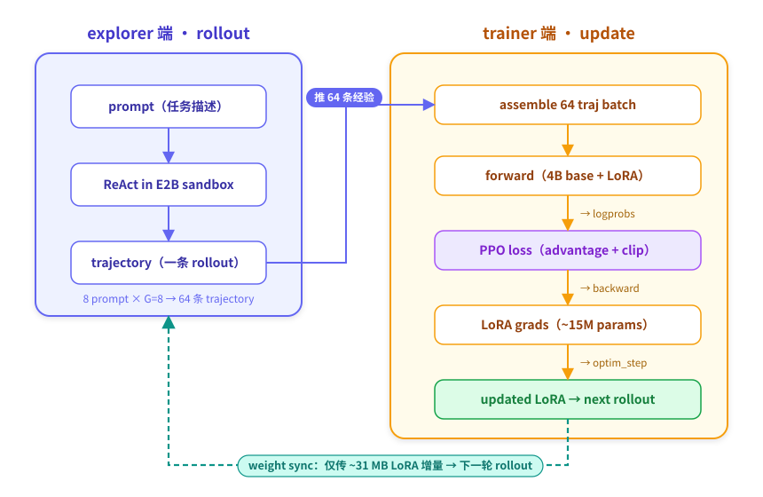

本章模式：拆解。第 4 章 advantage 算好了。这一章讲 advantage → 权重更新的最后一步：LoRA 省钱魔法、forward-backward 在后端的流程、以及让训练能稳定跑的关键 yaml 字段（
mini_batch_size: 9999）。
5.0 完整流水线一张图

每步：64 traj 进 → forward → loss → backward → optim_step → 新 LoRA → 下一步 rollout。
5.1 LoRA：4B 模型 ~15M 参数（~31 MB）
全量微调 4B 模型需要约 70 GB（fp32 master + bf16 weight + grad + AdamW m/v）。LoRA 的做法：
base 矩阵: W ∈ ℝ^(d×d) (冻结)
LoRA 增量: ΔW = A · B (只训这两个)
A ∈ ℝ^(d×r)
B ∈ ℝ^(r×d)
有效 weight = W + ΔW
r = rank。本教程 r=8，远小于 d=2560。
| 项 | 数量 |
|---|---|
| 全量微调一层一个矩阵 | d × d ≈ 6.55 M |
| LoRA 一层一个矩阵 | d × r + r × d ≈ 41 K（缩 160×） |
| 全模型 LoRA | 15.4M params（~31 MB fp16） |
base 4B 参数永远不动。每步 RL 真正在更新的就是这 ~31 MB。
你可以运行
python scripts/tutorial/ch5_inspect_training.py --model Qwen/Qwen3-4B-Thinking-2507 --rank 8自己验证这个数字。
5.2 forward 仍要 4B 全模型
虽然只更新 LoRA，forward 必须算 4B 全部 + LoRA 增量——LoRA 是叠加在原矩阵上的，少不了。
trinity 把这个 forward 委托给训练后端：
fb_future = await actor_client.forward_backward_custom_async(
batch=64_trajectories,
loss_fn=ppo_loss_fn,
)
opt_future = await actor_client.optim_step_async(adam_params)
后端内部：
- 把 batch 切成 micro-batch（每 ~2 条 trajectory，避免 OOM）；
- 对每个 micro-batch 跑 4B forward + LoRA 增量 → logprobs；
- 客户端用 logprobs + old_logprobs + advantage 算 PPO loss → 反向到 LoRA；
- 累积 micro-batch 梯度，最后一次 optim_step 更新 LoRA。
trinity yaml 只关心两个字段：
model:
tinker:
rank: 8
mini_batch_size: 9999
5.3 关键细节：mini_batch_size 9999 的奥秘
trinity tinker_trainer.train_step 在 batch_size=64 时有两条路径：
| 路径 | 行为 | 触发条件 |
|---|---|---|
| 整 batch 一次更新 | 64 条 → 1 次 forward_backward → 1 次 optim_step | mini_batch_size >= train_batch_size |
| mini-batch SGD | 切成 N 个 mini-batch → 每个都 forward_backward + optim_step | mini_batch_size < train_batch_size |
为什么本教程必须走整 batch：
mini-batch SGD 模式有 intra-step off-policy drift 问题：
- 第 1 个 mini-batch：θ₀ 算 ratio，正常；
- 第 1 次 optim_step → θ₁；
- 第 2 个 mini-batch：仍用 θ₀ 算的 old_logprob，但 model 已经是 θ₁ → ratio 偏离 1；
- ... 第 32 个 mini-batch 时 ratio 严重偏离 → PPO clip 把信号截掉。
解决方案：设 mini_batch_size: 9999（>= 64）让 trinity 走整 batch 路径，1 次 forward_backward + 1 次 optim_step。后端内部仍切 micro-batch 累积梯度，但只在最后做 1 次 optim_step——梯度等价于整 batch SGD，没有 drift。
普通用户照抄 9999 即可。
5.4 AdamW 在做什么
m = β₁ · m_prev + (1 - β₁) · grad
v = β₂ · v_prev + (1 - β₂) · grad²
update = lr · m̂ / (√v̂ + ε)
weight_new = weight_old - update - lr · weight_decay · weight_old
本教程：
optimizer:
lr: 5e-6
lr_scheduler_type: constant
min_lr_ratio: 0.1
lr=5e-6 怎么定的：v17/v20 mini-batch SGD 时代用 1e-6；切到整 batch 后 effective batch ×32，按 square-root scaling 1e-6 × √32 ≈ 5.66e-6 → 圆整到 5e-6。
lr 是最容易踩的坑：
| 现象 | 原因 | 措施 |
|---|---|---|
ppo_kl > 0.03 持续上升 |
lr 太大 | 降到 3e-6 |
| score 完全不动 | lr 太小 | 升到 1e-5 |
| score 涨一会就崩 | 缺 KL penalty | 加 kl_coef=0.001 |
5.5 weight sync 回 explorer
synchronizer:
sync_method: 'memory'
sync_interval: 1
sync_style: 'trainer_driven'
wait_for_new_weights: true
LoRA + Tinker 配置下 sync 很快，因为只传 ~31 MB 增量。
5.6 完整一步训练的时间轴
t=0 explorer 开始 rollout 64 traj
│ 17 min
t=17 rollout 完成 → 算 advantage → 推到 trainer
│ 10 min
t=27 trainer 完成 forward_backward + optim_step
│ 1 min
t=28 weight sync 完成（仅传 ~31 MB）→ 下一步开始
19 步 ≈ 9 小时。
5.7 动手试试
以下脚本从模型 config 精确计算 LoRA 参数量，同时展示训练配置和时间线。
# 用本地模型精确计算（只读 config.json，不加载权重，几秒完成）
python scripts/tutorial/ch5_inspect_training.py --model Qwen/Qwen3-4B-Thinking-2507 --rank 8
# 或用预计算数据（无需模型文件）
python scripts/tutorial/ch5_inspect_training.py --sample
5.8 这一章你应该带走的
✅ LoRA 让 4B 模型只用 15M 参数（~31 MB）训练：base 4B 永远冻结。
✅ forward 仍要 4B 全模型：trinity 委托给 Tinker/TuFT。
✅ mini_batch_size: 9999 的由来：避免 mini-batch SGD intra-step drift。
✅ lr=5e-6 + AdamW + constant：和整 batch 路径配套。
✅ 健康度三件套：ppo_kl、pg_clipfrac、reward_std。
❌ 你不需要懂：FSDP 多卡分片细节。
留个问题：你能从 reward → advantage → loss → gradient → weight 全链路走一遍。那如果改其中一个变量（比如加 KL penalty、换 G）曲线会怎么变？第 6 章带你动手做 ablation。